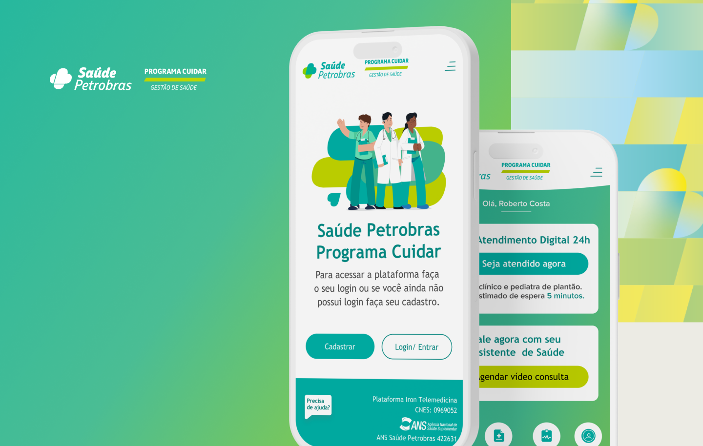
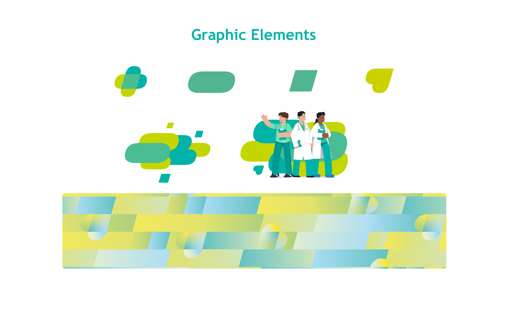
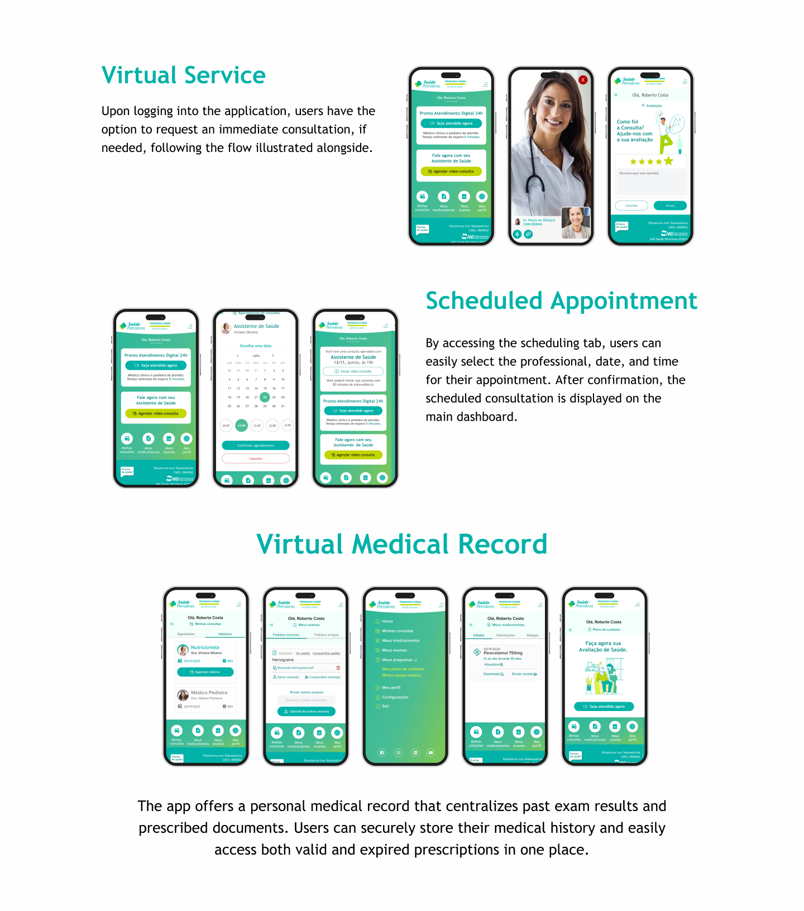
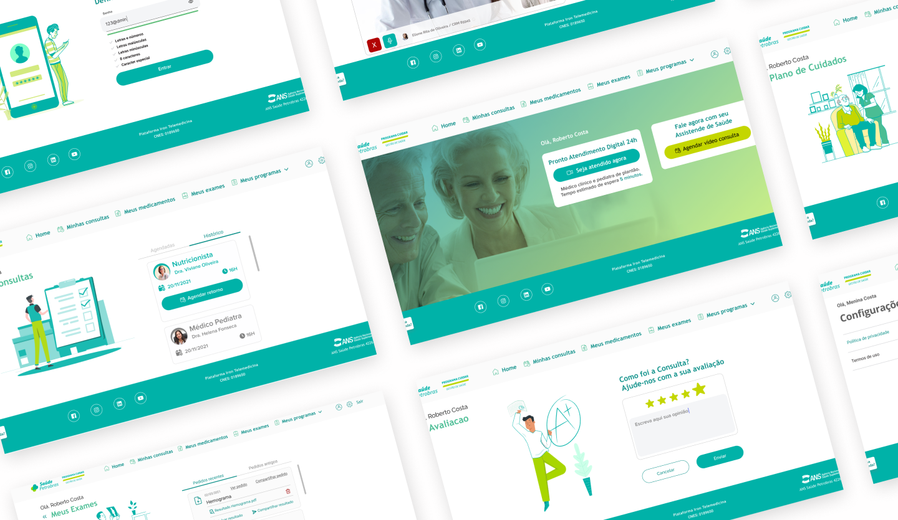

Petrobras Saúde · Telemedicina
Uma força de trabalho que não podia esperar a clínica.
Com Karla Granadeiro, desenhei um caminho que começa na triagem para o funcionário descrever um sintoma, receber orientação e chegar a um médico sem ir à clínica.
Visão geral
Descrever, triar, consultar, orientar.
A Petrobras Saúde é um dos maiores planos de saúde corporativos do Brasil. Na COVID, mais de 50 mil funcionários e famílias precisavam de avaliação de sintomas e de um médico sem ir à clínica.
O portal corporativo espalhava esse caminho em telas desconectadas. Muita dessa gente usava telessaúde pela primeira vez, e estava ansiosa.
Problema
Um menu completo falhava no momento em que as pessoas estavam preocupadas.
Uma home cheia de serviços de saúde parecia pronta nas revisões com stakeholders. No uso, as pessoas pulavam telas médicas densas e travavam na escolha de por onde começar.

Oportunidade
Começar pelo sintoma, não pelo catálogo de serviços.
Entrevistas com funcionários, mapeamento de fluxo e teste de protótipo aconteceram antes da construção completa. A pesquisa voltava sempre à mesma necessidade: linguagem simples, acesso rápido, um próximo passo claro.
Solução
Uma decisão de cada vez.
O caminho é modular e passo a passo, especialmente num momento de preocupação com a saúde. O escopo cobriu a triagem, a interface e um sistema visual alinhado à Petrobras.



Decisões
Três trocas numa crise.
Linguagem do dia a dia no lugar de um painel clínico.
Telas carregadas de informação foram testadas cedo. As pessoas pulavam. A revelação progressiva substituiu o jargão.
Triagem antes do menu de funções.
Começamos pela avaliação de sintomas porque essa era a entrada de que os funcionários de fato precisavam.
A confiança da instituição, com um tom humano.
Alinhamento à Petrobras sem frieza burocrática: visuais calmos, estados de confirmação e um sinal de que a sessão era segura em cada passagem.
Resultados
O que deu para observar. Não um benchmark publicado.
O produto foi para produção no pico da COVID para mais de 50 mil beneficiários. Funcionários chegaram a suporte médico sem visita à clínica, o que aliviou a carga presencial quando a capacidade importava.
O teste de usabilidade destacou a facilidade de navegação para quem usava telessaúde pela primeira vez. A triagem digital desviou casos não críticos do atendimento presencial. Eu não tenho taxas publicadas de conclusão nem tempo de tarefa neste projeto, então não vou afirmá-las.
Reflexão
Cada ponto extra de decisão custa mais quando alguém já está com medo.
Produtos de crise não podem mostrar o sistema inteiro de uma vez. O julgamento foi o que segurar até a pessoa descrever o que estava errado.
O que eu ainda construiria: cuidado preventivo na mesma entrada, e um acompanhamento que lembre a última consulta.